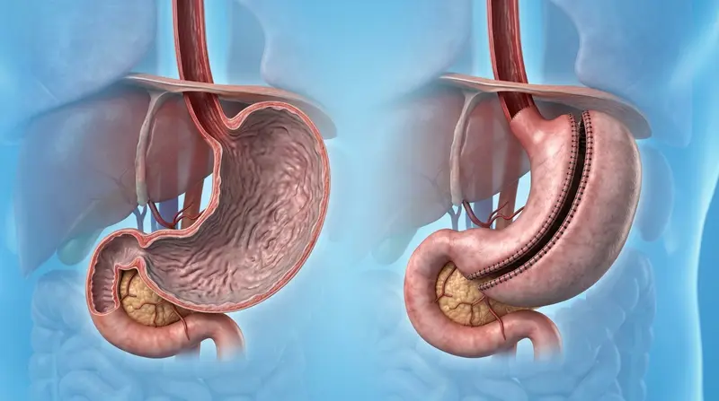

Bariatric Safety
Is Bariatric Surgery Safe? Medical Facts & Myths Explained
Addressing common misconceptions surrounding weight-loss surgery, procedure safety, and long-term metabolic health benefits.
Welcome to the official clinic portal of Dr. Javed Khan. Taiwan-trained in robotic & advanced laparoscopic procedures, delivering the most advanced metabolic and weight-loss care at Pak Medical Center Timergara.
Click the poster below to view the official high-resolution clinical guide, surgery overview, and helpline contacts.

Dedicated to clinical excellence, surgical precision, and long-term health transformation.

Dr. Javed Khan completed specialized clinical training in Taiwan, mastering cutting-edge Robotic Surgery and advanced laparoscopic bariatric procedures. As one of the most advanced surgeons in KP and Pakistan, Dr. Javed Khan brings international clinical precision and state-of-the-art care to Pak Medical Center Timergara.
Comprehensive surgical treatments tailored to individual patient health goals.
Comprehensive surgical solutions including Gastric Sleeve and Bariatric procedures designed for long-term weight reduction and metabolic health improvement.
Consult on WhatsAppMinimally invasive keyhole surgeries offering smaller incisions, minimal scarring, significantly reduced discomfort, and faster post-operative recovery.
Consult on WhatsAppExpert surgical interventions for gallbladder issues, hernia repairs, abdominal conditions, and gastrointestinal clinical care.
Consult on WhatsAppDedicated continuous follow-up care, nutrition counseling, and metabolic monitoring to ensure optimal long-term treatment outcomes.
Consult on WhatsAppA visual showcase of clinical activities, surgical achievements, and patient interactions.


Watch real patient experiences and surgical insights directly from Dr. Javed Khan's social media platforms.
Facebook Video
Watch Dr. Javed Khan explain the bariatric procedure process and clinic facilities at Pak Medical Center Timergara.
Watch on Facebook
Facebook Video
Direct video footage and patient recovery reviews from Timergara Bariatric Clinic.
Watch on Facebook
TikTok Channel
Explore Dr. Javed Khan's active TikTok channel (@surgeondrjavedkhan) featuring clinical tips and patient reviews.
Visit TikTokExpert surgical knowledge, patient guidance, and medical facts directly from Dr. Javed Khan.
Addressing common misconceptions surrounding weight-loss surgery, procedure safety, and long-term metabolic health benefits.

Gastric SleeveA comprehensive clinical guide explaining the laparoscopic sleeve gastrectomy procedure, candidate eligibility, and expected results.
Exploring keyhole surgical innovations, minimal tissue trauma, reduced hospital stay, and cosmetically superior healing.
Essential nutrition stages, protein requirements, hydration habits, and physical activity recommendations after weight loss surgery.
How metabolic procedures significantly improve glycemic control, reduce insulin dependence, and lower cardiovascular risks.
Have questions about Bariatric Surgery or want to schedule an appointment with Dr. Javed Khan? Click below for instant WhatsApp assistance.
Pak Medical Center, Timergara, Khyber Pakhtunkhwa
Clicking the button below will open WhatsApp with a default appointment message directly sent to Dr. Javed Khan's desk.
Chat on WhatsApp (0342-5060791)